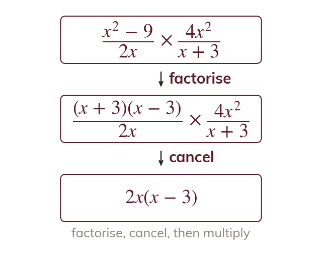
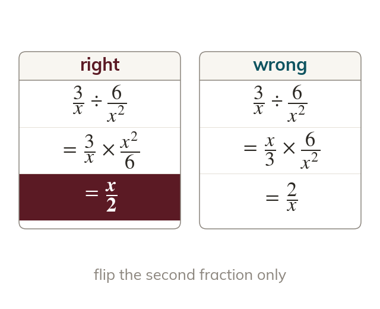
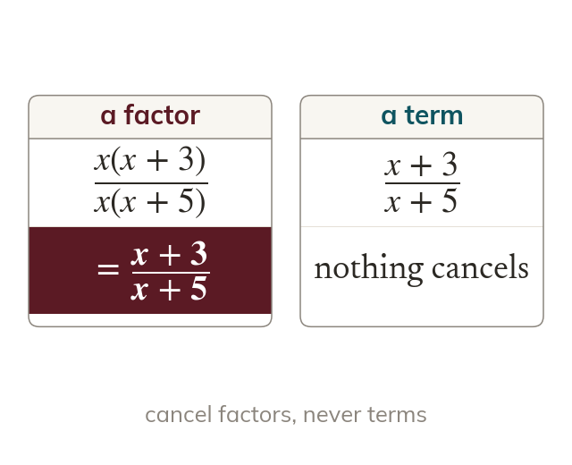
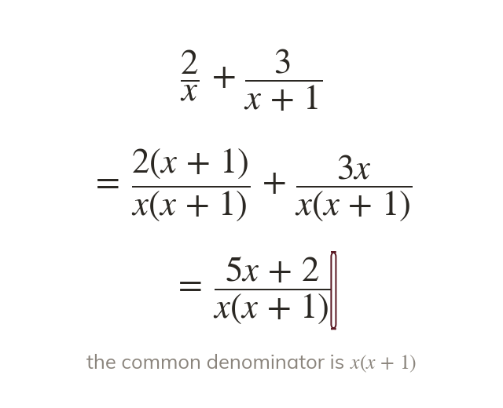
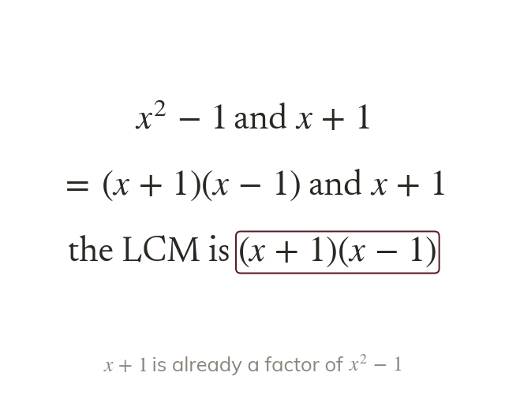
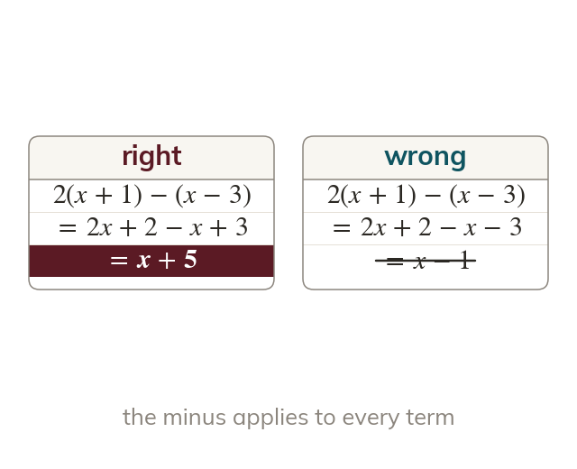

Multiply across
Multiply the numerators and multiply the denominators. Factorise first, so common factors cancel before anything is multiplied.
Algebraic fractions follow the rules of number fractions, as long as everything is factorised first. Combining fractions into one is the reverse of the next lesson's partial fractions.
Work down the page at your own pace. Write every answer in your book first, then click to check it.
Read each card, then follow the worked examples one step at a time.

Multiply the numerators and multiply the denominators. Factorise first, so common factors cancel before anything is multiplied.

Dividing by a fraction is multiplying by its reciprocal. Flip only the second fraction, then multiply.

does not simplify: is a term, not a factor. Only a bracket or factor of the whole top and the whole bottom cancels.
Pick an answer. If it's wrong, the feedback tells you which mistake it was.
Write the blanks in your book first, then tap each one to check.
Read each card, then follow the worked examples one step at a time.

Write both fractions over the lowest common multiple of the denominators. Multiply each numerator by whatever its denominator was multiplied by.

When the denominators share a factor, factorise them first. The lowest common multiple uses each factor once.

When the second numerator has two terms, the minus sign applies to both. Keep it in a bracket until you expand.
Pick an answer. If it's wrong, the feedback tells you which mistake it was.
Write the blanks in your book first, then tap each one to check.
Finished? Next lesson: 13.P1.3 Partial Fractions.
For each skill, tap the one that is true for you today. Your Revise pages start with anything you mark Not yet.
Your ratings are saved on this device only.
Log in, then search for a code to practise that skill.